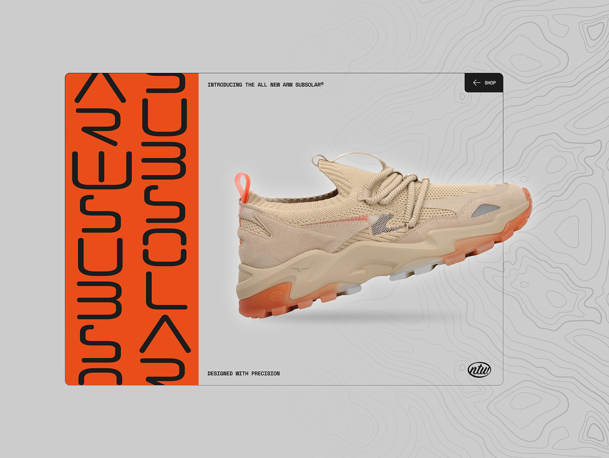
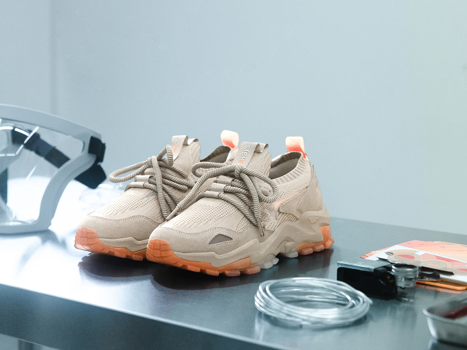
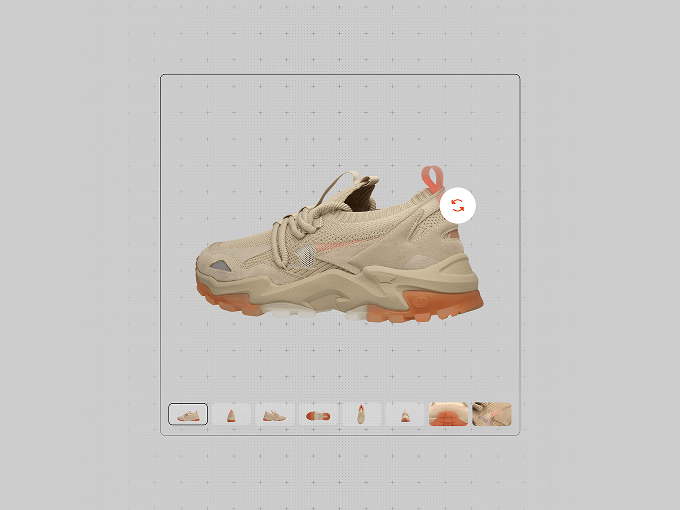
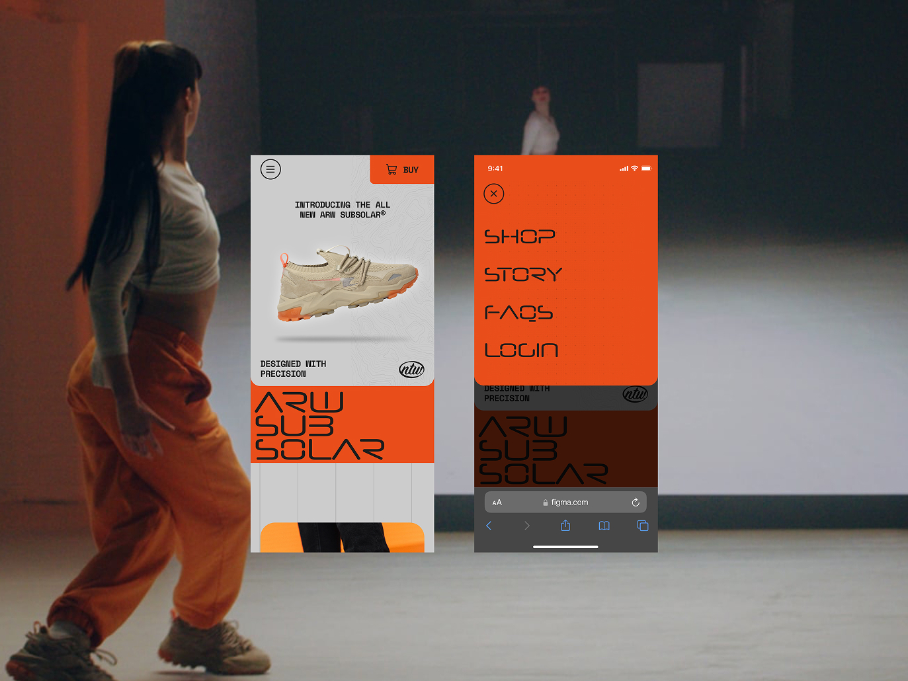
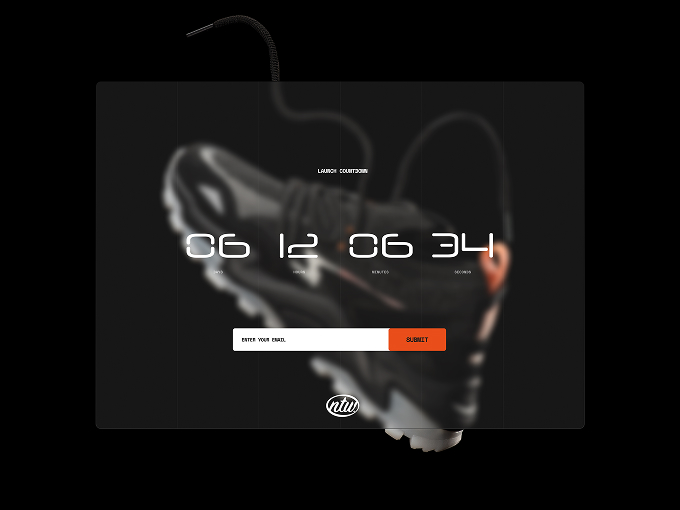
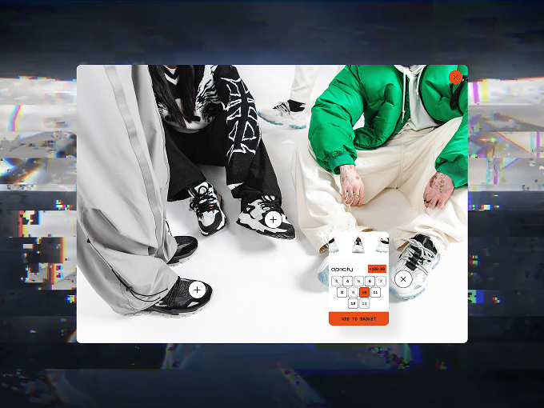
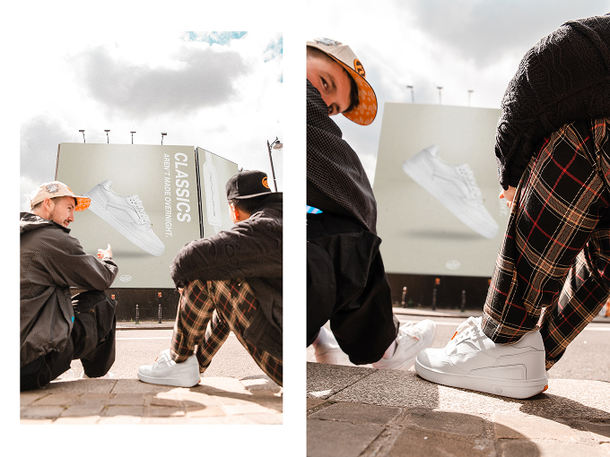
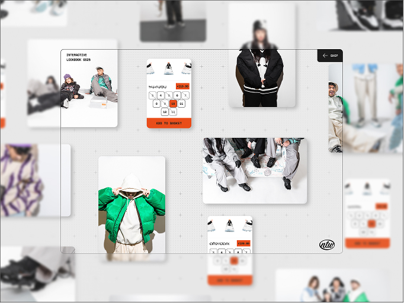

NoTwoWays
Sold Out In 11 Minutes
NoTwoWays, the sneaker brand founded by YouTuber Callux (of the Sidemen) and designer Rocky Princely, needed a drop experience built to handle a fanbase in the millions. I led creative direction and UX for the launch of the ARW Subsolar, built on Shopify, balancing storytelling with a checkout that couldn't buckle under pressure. The result: 5,000 pairs sold out in 11 minutes, generating £500k in revenue, success that led to an ongoing relationship supporting several more releases.
Results
- 5,000 pairs sold out in 11 minutes (£500k revenue)
- 150% more stock supported vs the previous drop
- 37k+ pre-launch views via creator and Hypebeast traffic
- Contributed to a £2.3m investment round later that year

The Challenge
NoTwoWays had already built a loyal following through fast, high-demand drops, early releases had sold out hundreds of pairs in under a minute. The ARW Subsolar release needed to go further: support significantly more stock, hold up against a much bigger traffic spike driven by Callux's creator audience and Hypebeast coverage, and still feel like an event rather than just a queue. Getting the balance wrong meant either lost sales or a site crashing in front of millions of fans.


The Approach
The client came to us as Shopify experts, and building the drop on Shopify gave us a strong performance foundation to work with, which mattered a lot given the traffic spikes a release like this would pull in.
On top of that platform, the brand had serious in-house media firepower, videographers and content creators producing high volumes of hype content ahead of every drop, and my job was to give that content a home without letting it get in the way of conversion. I built out a pre-launch landing experience packed with interactive features designed to build anticipation: sliders, 360º product visualisations, short film pieces, motion effects, and gamified elements that gave fans a reason to keep coming back before the drop went live.
That meant working closely and iteratively with the client's content team, reviewing what they were producing, figuring out where it could sit on the site, and pushing back where a piece of content risked slowing the page down or distracting from the eventual conversion moment. A lot of this came down to stakeholder and expectation management, keeping the client's ambition for a spectacular pre-launch experience aligned with the hard requirement that the site still convert cleanly the second the drop went live.
On the release side itself, I designed a stripped-back, high-speed checkout flow, deliberately separate from the immersive pre-launch experience, built to hold up under extreme concurrent traffic. With the model proven, I carried the same hands-on role, leading a small, focused team, across the Formula, Foams, ARW Afterdark, and ARW Apricity releases that followed.

The Outcome
The drop sold out completely, all 5,000 pairs gone in 11 minutes, bringing in £500k in revenue while supporting 150% more stock than the brand's previous release, without the site buckling under the load. The pre-launch build-up did its job too, generating 37k+ views through creator and Hypebeast traffic before the drop even went live. It was enough to help NoTwoWays secure a £2.3m investment round later that year, and enough to earn an ongoing partnership with the brand, carrying the same approach through the Formula, Foams, ARW Afterdark, and ARW Apricity releases that followed.


Reflection
This was as much a stakeholder management job as a design one. The client had no shortage of ambition or content, my role was making sure all that energy channelled into a site that still converted cleanly the second it mattered most, a system that proved itself well enough to carry the relationship through several more releases.

